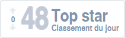
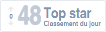
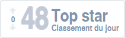

Présentation
| Nationalité | Belge |
|---|---|
| Naissance | (Liège - Belgique) |
| Âge | 25 ans |
| Adresse | Rue des Sorbiers, 6 (4140 Sprimont) |
| GSM | 0474/ 41 16 54 |
| quentingeorge7@gmail.com |
 

| Nationalité | Belge |
|---|---|
| Naissance | (Liège - Belgique) |
| Âge | 25 ans |
| Adresse | Rue des Sorbiers, 6 (4140 Sprimont) |
| GSM | 0474/ 41 16 54 |
| quentingeorge7@gmail.com |

| 2014 - 2016 | Bachelier en techniques graphiques finalité techniques infographiques (option web design) à HEPL Rennequin Sualem (INPRES). |
|---|---|
| 2008 - 2010 | Bachelier en Électricité-Automation à Helmo Saint-Laurent. |
| 2006 - 2008 | Humanités techniques à l’Athénée Royal d’Aywaille, option électro-automaticien. (Épreuve de qualification réussie : certificat de qualification de sixième année de l’enseignement secondaire). |
| 2002 - 2006 | Humanités générales à l'institut Saint-Joseph/Saint-Raphaël Remouchamps, option Sciences. |
| Octobre 2011 - Novembre 2013 (2ans) | Façonnage, fabrication de dépliants publicitaires sur encarteuse. (CONCEPT FAÇONNAGE) |
|---|---|
| Octobre 2011 (2semaines) | Montage de tuyauteries en acier pour le chauffage et la climatisation. (D-FI) |
| Janvier 2011 - Septembre 2011 (8mois) | Montage électrique dans le chauffage et la climatisation. (D-FI) |
| Juillet 2008 (1mois) | Modernisation de la régulation de température d'une chaîne de fabrication de film plastique. (ARMOIRES ET AUTOMATION) |
|---|---|
| Août 2006 (1mois) | Construction de routes dans une entreprise de travaux publics. (S.A. LEGROS) |
| Avril 2008 (15jours) | Câblage d’armoires électriques et automation. (ARMOIRES ET AUTOMATION) |
|---|---|
| Novembre 2007 (15jours) | Fabrication de pièces mécaniques sur tours numériques. (ATELIER MARC PIRLOT) |
| Avril 2007 (15jours) | Électricité générale (ÉLECTRO SCION) |
| Novembre 2006 (15jours) | Dépannage en électroménager. (ROBERT PHILLIPE) |